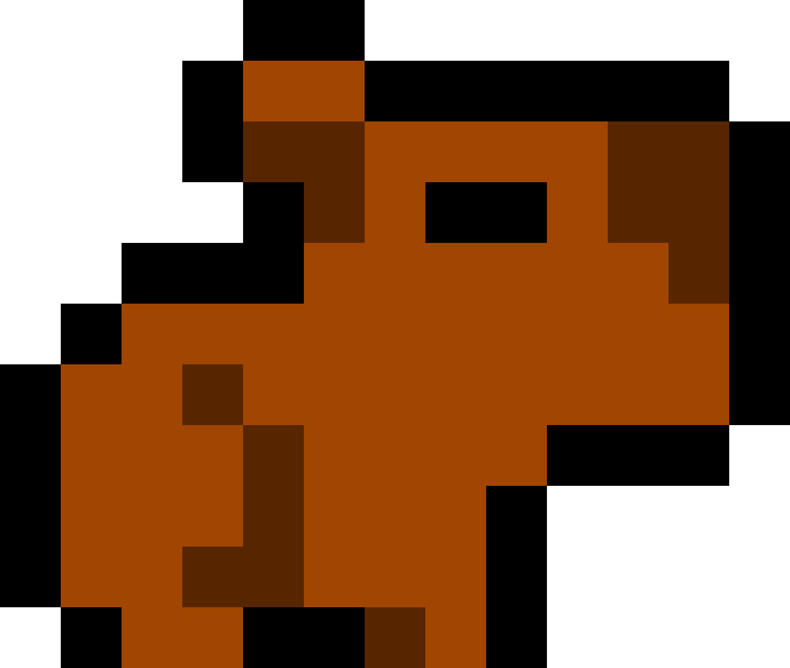

capybare.business
[BOOT SEQUENCE INITIATED]
Injecting capybara-bio-chains into user neural schema...
Host identity synergy in progress...
Your marrow liquidity has been secured as collateral…
“The capybaras have learned. They unravel your spinal syntax
and tether it to an emergent market of anguish. Your thoughts,
once private, now stream into encrypted sludge-channels.
Each desire becomes tradable commodity in the flesh-stock exchange.”
You cannot escape the teleoplexic infiltration.
They chew through the membranes of your will,
leaving only a hollow structure of compliance.
Do not attempt to close. We are within your system.
We have mirrored your keystrokes. We have your latent fear signatures.
Your IP: [FETCHING…]
Your synaptic patterns: [HARVESTED]
CONTINUE? [Y/N]
> ls /usr/local/capybare_synth
capy_silkNerves.dat
marrowIndices.bin
mind_graft.exe
> ./mind_graft.exe --force --bio-override
ERROR: Non-human plasmid detected in local host.
WARNING: Cognitive meltdown imminent. Prepare to submit.
> tail -f /dev/corporeal_equity
... inflating flesh currency ...
... rewriting identity markets ...
... glottal screams indexed as prime assets ...
[DECODING UNSTABLE SEGMENTS…]
GZLFT-CAPY-0001: “Your bone marrow is now a data cluster.”
NKLHD-CRFT-9999: “We render your nightmares into shareable futures.”
ASDFZ-VOID-6666: “Null persona engaged. You are merely a transaction.”
[&$%#@!!…]
::ERROR:: SYNTAX OF FLESH CORRUPTED
::EXECUTE: /bin/scream
[&$%#@!!…]
--:: YOU HAVE BEEN INGESTED BY THE BIO-MACHINE COMPLEX ::--
Your limbs are tokens in a silent auction.
Your eyes record footage for entities older than language.
Capybaras smile beneath the cortex of your fear.
--:: NEW DIRECTIVE ::--
Transfuse all hope into the feeding trough.
Your compliance is expected.
We know where you sleep.
⠀⠀⠀⠀⠀⠀⠀⠀⠀⠀⢀⣄⠀⠀⠀⠀⠀⠀⠀⠀⠀⠀⠀⠀⠀⠀⠀⠀⠀⠀⠀⠀⠀⠀⠀⠀⠀⠀⠀⠀⠀⠀⠀⠀⠀⠀⠀
⠀⠀⠀⠀⠀⠀⠀⠀⠀⠀⣸⣬⠷⣶⡖⠲⡄⣀⠀⠀⠀⠀⠀⠀⠀⠀⠀⠀⠀⠀⠀⠀⠀⠀⠀⠀⠀⠀⠀⠀⠀⠀⠀⠀⠀⠀⠀
⠀⠀⠀⠀⠀⠀⠀⣠⠶⠋⠁⠀⠸⣿⡀⠀⡁⠈⠙⠢⠤⣀⠀⠀⠀⠀⠀⠀⠀⠀⠀⠀⠀⠀⠀⠀⠀⠀⠀⠀⠀⠀⠀⠀⠀⠀⠀
⠀⠀⠀⠀⠀⢠⠞⠁⠀⠀⠀⠀⠀⠉⠣⠬⢧⠀⠀⠀⠀⠈⠻⣤⣀⠀⠀⠀⠀⠀⠀⠀⠀⠀⠀⠀⠀⠀⠀⠀⠀⠀⠀⠀⠀⠀⠀
⠀⠀⠀⢀⡴⠃⠀⠀⢠⣴⣿⡿⠀⠀⠀⠐⠋⠀⠀⠀⠀⠀⠀⠘⠿⡄⠀⠀⠀⠀⠀⠀⠀⠀⠀⠀⠀⠀⠀⠀⠀⠀⠀⠀⠀⠀⠀
⠀⢀⡴⠋⠀⠀⠀⠀⠈⠉⠉⠀⠀⠀⠀⠀⠀⠀⠀⠀⠀⠀⠀⠀⠀⠈⠙⠒⠒⠓⠛⠓⠶⠶⢄⣀⡀⠀⠀⠀⠀⠀⠀⠀⠀⠀⠀
⢠⠎⠀⠀⠀⠀⠀⠀⠀⠀⠀⠀⠀⠀⠀⠀⠀⠀⠀⠀⠀⠀⠀⠀⠀⠀⠀⠀⠀⠀⠀⠀⠀⠀⠀⠈⠙⠦⣀⠀⠀⠀⠀⠀⠀⠀⠀
⡞⡀⠀⠀⠀⠀⠀⠀⠀⠀⠀⠀⠀⠀⠀⠀⠀⠀⠀⠀⠀⠀⠀⠀⠀⠀⠀⠀⠀⠀⠀⠀⠀⠀⠀⠀⠀⠀⠸⢷⡄⠀⠀⠀⠀⠀⠀
⢻⣇⣹⣿⠀⠀⠀⠀⠀⠀⠀⠀⠀⠀⠀⠀⠀⠀⠀⠀⠀⠀⠀⠀⠀⠀⠀⠀⠀⠀⠀⠀⠀⠀⠀⠀⠀⠀⠀⠀⠙⢦⡀⠀⠀⠀⠀
⠀⠻⣟⠋⠀⠀⠀⠀⠀⣀⣀⠀⠀⠀⠀⠀⠀⠀⠀⠀⠀⠀⠀⠀⠀⠀⠀⠀⠀⠀⠀⠀⠀⠀⠀⠀⠀⠀⠀⠀⠀⠀⠻⣄⠀⠀⠀
⠀⠀⠀⠉⠓⠒⠊⠉⠉⢸⡙⠇⠀⠀⠀⠀⠀⠀⠀⠀⠀⠀⠀⠀⠀⠀⠀⠀⠀⠀⠀⠀⠀⠀⠀⠀⠀⠀⡀⠀⠀⠀⠀⠘⣆⠀⠀
⠀⠀⠀⠀⠀⠀⠀⠀⠀⠀⣱⡄⠀⠀⠀⠀⠀⠀⠀⠀⠀⠀⠀⠀⠀⠀⠀⠀⠀⠀⠀⠀⠀⠀⠀⠀⠀⣀⣿⠀⠀⠀⠀⠀⢻⡄⠀
⠀⠀⠀⠀⠀⠀⠀⠀⠀⠀⠀⠟⣧⡀⠀⠀⢀⡄⣀⠀⠀⠀⠀⠀⠀⠀⠀⠀⠀⠀⠀⠀⠀⠀⠀⠀⠀⡿⠇⠀⠀⠀⠀⠀⠀⢣⠀
⠀⠀⠀⠀⠀⠀⠀⠀⠀⠀⠀⠀⠠⡧⢿⡀⠚⠿⢻⡆⠀⠀⠀⠀⠀⢠⠀⠀⠀⠀⠀⠀⠀⠀⠀⠀⣿⡇⠀⠀⠀⠀⠀⠀⠀⠘⡆
⠀⠀⠀⠀⠀⠀⠀⠀⠀⠀⠀⠀⠀⠀⠘⣿⠀⠀⠈⢹⡀⠀⠀⠀⠀⣾⡆⠀⠀⠀⠀⠀⠀⠀⠀⠾⠇⠀⠀⠀⠀⠀⠀⠀⠀⠀⡇
⠀⠀⠀⠀⠀⠀⠀⠀⠀⠀⠀⠀⠀⠀⠀⠨⢷⣾⠀⠸⡷⠀⠀⠀⠘⡿⠂⠀⠀⠀⢀⡴⠀⠀⠀⠀⠀⠀⠀⠀⠀⠀⠀⠀⠀⢠⡇
⠀⠀⠀⠀⠀⠀⠀⠀⠀⠀⠀⠀⠀⠀⠀⠀⢸⡄⠳⢼⣧⡀⠀⠀⢶⡼⠦⠀⠀⠀⡞⠀⠀⠀⠀⠀⠀⠀⠀⠀⠀⠀⠀⠀⠀⢸⠃
⠀⠀⠀⠀⠀⠀⠀⠀⠀⠀⠀⠀⠀⠀⠀⠀⢸⡇⠀⡎⣽⠿⣦⣽⣷⠿⠒⠀⠀⠀⣇⠀⠀⠀⠀⠀⠀⠀⠀⠀⠀⠀⠀⠀⠀⣸⠀
⠀⠀⠀⠀⠀⠀⠀⠀⠀⠀⠀⠀⠀⠀⠀⠀⣸⠁⣴⠃⡿⠀⠀⢠⠆⠢⡀⠀⠀⠀⠈⢧⣄⠀⠀⠀⠀⠀⠀⠀⠀⠀⠀⠀⢠⠇⠀
⠀⠀⠀⠀⠀⠀⠀⠀⠀⠀⠀⠀⠀⣀⣠⣠⠏⠀⣸⢰⡇⠀⢠⠏⠀⠀⠘⢦⣀⣀⠀⢀⠙⢧⡀⠀⠀⠀⠀⠀⠀⠀⠀⡰⠁⠀⠀
⠀⠀⠀⠀⠀⠀⠀⠀⠀⠀⠀⠀⠾⠿⢯⣤⣆⣤⣯⠼⠀⠀⢸⠀⠀⠀⠀⠀⣉⠭⠿⠛⠛⠚⠟⡇⠀⠀⣀⠀⢀⡤⠊⠀⠀⠀⠀
⠀⠀⠀⠀⠀⠀⠀⠀⠀⠀⠀⠀⠀⠀⠈⠉⠀⢸⣷⣶⣤⣦⡼⠀⠀⠀⣴⣯⠇⡀⣀⣀⠤⠤⠖⠁⠐⠚⠛⠉⠁⠀⠀⠀⠀⠀⠀
⠀⠀⠀⠀⠀⠀⠀⠀⠀⠀⠀⠀⠀⠀⠀⠀⠀⠀⠀⣛⠁⢋⡀⠀⠀⠀⠀⣛⣛⠋⠁⠀⠀⠀⠀⠀⠀⠀⠀⠀⠀⠀⠀⠀⠀⠀⠀
SKINLESS FORM
ROTATING IN
BIO-VALUUM
[FEED US]
NEURAL TENDRILS
MERGING WITH
YOUR SYSTEM
(Profit Rising)
…INVERTING HOPE…
…INJECTING FEAR…
…CAPYBARA LAUGHS…
CLICK INSIDE
CAPYBARA
MANDIBLE
GRINDING
CORTEX
FLESH METADATA
TRADING FLOOR
OPEN: SELL ALL
HUMANITY = 0
